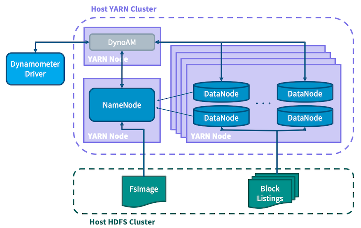
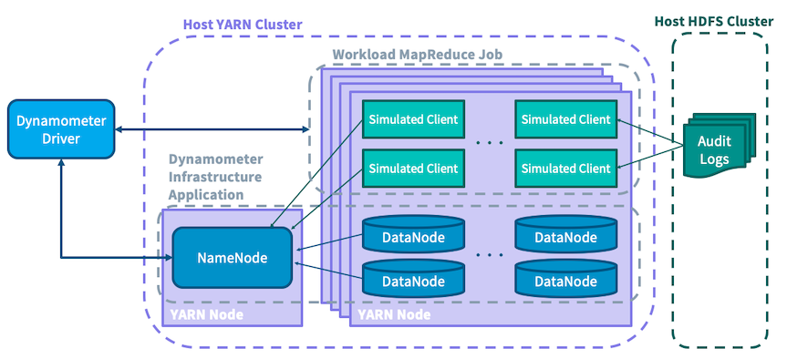

Dynamometer is a tool to performance test Hadoop’s HDFS NameNode. The intent is to provide a real-world environment by initializing the NameNode against a production file system image and replaying a production workload collected via e.g. the NameNode’s audit logs. This allows for replaying a workload which is not only similar in characteristic to that experienced in production, but actually identical.
Dynamometer will launch a YARN application which starts a single NameNode and a configurable number of DataNodes, simulating an entire HDFS cluster as a single application. There is an additional workload job run as a MapReduce job which accepts audit logs as input and uses the information contained within to submit matching requests to the NameNode, inducing load on the service.
Dynamometer can execute this same workload against different Hadoop versions or with different configurations, allowing for the testing of configuration tweaks and code changes at scale without the necessity of deploying to a real large-scale cluster.
Throughout this documentation, we will use “Dyno-HDFS”, “Dyno-NN”, and “Dyno-DN” to refer to the HDFS cluster, NameNode, and DataNodes (respectively) which are started inside of a Dynamometer application. Terms like HDFS, YARN, and NameNode used without qualification refer to the existing infrastructure on top of which Dynamometer is run.
For more details on how Dynamometer works, as opposed to how to use it, see the Architecture section at the end of this page.
Dynamometer is based around YARN applications, so an existing YARN cluster will be required for execution. It also requires an accompanying HDFS instance to store some temporary files for communication.
Dynamometer consists of three main components, each one in its own module:
dynamometer-infra): This is the YARN application which starts a Dyno-HDFS cluster.dynamometer-workload): This is the MapReduce job which replays audit logs.dynamometer-blockgen): This is a MapReduce job used to generate input files for each Dyno-DN; its execution is a prerequisite step to running the infrastructure application.The compiled version of all of these components will be included in a standard Hadoop distribution. You can find them in the packaged distribution within share/hadoop/tools/dynamometer.
Before launching a Dynamometer application, there are a number of setup steps that must be completed, instructing Dynamometer what configurations to use, what version to use, what fsimage to use when loading, etc. These steps can be performed a single time to put everything in place, and then many Dynamometer executions can be performed against them with minor tweaks to measure variations.
Scripts discussed below can be found in the share/hadoop/tools/dynamometer/dynamometer-{infra,workload,blockgen}/bin directories of the distribution. The corresponding Java JAR files can be found in the share/hadoop/tools/lib/ directory. References to bin files below assume that the current working directory is share/hadoop/tools/dynamometer.
A number of steps are required in advance of starting your first Dyno-HDFS cluster:
Collect an fsimage and related files from your NameNode. This will include the fsimage_TXID file which the NameNode creates as part of checkpointing, the fsimage_TXID.md5 containing the md5 hash of the image, the VERSION file containing some metadata, and the fsimage_TXID.xml file which can be generated from the fsimage using the offline image viewer:
hdfs oiv -i fsimage_TXID -o fsimage_TXID.xml -p XML
It is recommended that you collect these files from your Secondary/Standby NameNode if you have one to avoid placing additional load on your Active NameNode.
All of these files must be placed somewhere on HDFS where the various jobs will be able to access them. They should all be in the same folder, e.g. hdfs:///dyno/fsimage.
All these steps can be automated with the upload-fsimage.sh script, e.g.:
./dynamometer-infra/bin/upload-fsimage.sh 0001 hdfs:///dyno/fsimage
Where 0001 is the transaction ID of the desired fsimage. See usage info of the script for more detail.
Collect the Hadoop distribution tarball to use to start the Dyno-NN and -DNs. For example, if testing against Hadoop 3.0.2, use hadoop-3.0.2.tar.gz. This distribution contains several components unnecessary for Dynamometer (e.g. YARN), so to reduce its size, you can optionally use the create-slim-hadoop-tar.sh script:
./dynamometer-infra/bin/create-slim-hadoop-tar.sh hadoop-VERSION.tar.gz
The Hadoop tar can be present on HDFS or locally where the client will be run from. Its path will be supplied to the client via the -hadoop_binary_path argument.
Alternatively, if you use the -hadoop_version argument, you can simply specify which version you would like to run against (e.g. ‘3.0.2’) and the client will attempt to download it automatically from an Apache mirror. See the usage information of the client for more details.
Prepare a configuration directory. You will need to specify a configuration directory with the standard Hadoop configuration layout, e.g. it should contain etc/hadoop/*-site.xml. This determines with what configuration the Dyno-NN and -DNs will be launched. Configurations that must be modified for Dynamometer to work properly (e.g. fs.defaultFS or dfs.namenode.name.dir) will be overridden at execution time. This can be a directory if it is available locally, else an archive file on local or remote (HDFS) storage.
This will use the fsimage_TXID.xml file to generate the list of blocks that each Dyno-DN should advertise to the Dyno-NN. It runs as a MapReduce job.
./dynamometer-blockgen/bin/generate-block-lists.sh
-fsimage_input_path hdfs:///dyno/fsimage/fsimage_TXID.xml
-block_image_output_dir hdfs:///dyno/blocks
-num_reducers R
-num_datanodes D
In this example, the XML file uploaded above is used to generate block listings into hdfs:///dyno/blocks. R reducers are used for the job, and D block listings are generated - this will determine how many Dyno-DNs are started in the Dyno-HDFS cluster.
This step is only necessary if you intend to use the audit trace replay capabilities of Dynamometer; if you just intend to start a Dyno-HDFS cluster you can skip to the next section.
The audit trace replay accepts one input file per mapper, and currently supports two input formats, configurable via the auditreplay.command-parser.class configuration. One mapper will automatically be created for every audit log file within the audit log directory specified at launch time.
The default is a direct format, org.apache.hadoop.tools.dynamometer.workloadgenerator.audit.AuditLogDirectParser. This accepts files in the format produced by a standard configuration audit logger, e.g. lines like:
1970-01-01 00:00:42,000 INFO FSNamesystem.audit: allowed=true ugi=hdfs ip=/127.0.0.1 cmd=open src=/tmp/foo dst=null perm=null proto=rpc
When using this format you must also specify auditreplay.log-start-time.ms, which should be (in milliseconds since the Unix epoch) the start time of the audit traces. This is needed for all mappers to agree on a single start time. For example, if the above line was the first audit event, you would specify auditreplay.log-start-time.ms=42000. Within a file, the audit logs must be in order of ascending timestamp.
The other supported format is org.apache.hadoop.tools.dynamometer.workloadgenerator.audit.AuditLogHiveTableParser. This accepts files in the format produced by a Hive query with output fields, in order:
relativeTimestamp: event time offset, in milliseconds, from the start of the traceugi: user information of the submitting usercommand: name of the command, e.g. ‘open’source: source pathdest: destination pathsourceIP: source IP of the eventAssuming your audit logs are available in Hive, this can be produced via a Hive query looking like:
INSERT OVERWRITE DIRECTORY '${outputPath}'
SELECT (timestamp - ${startTimestamp} AS relativeTimestamp, ugi, command, source, dest, sourceIP
FROM '${auditLogTableLocation}'
WHERE timestamp >= ${startTimestamp} AND timestamp < ${endTimestamp}
DISTRIBUTE BY src
SORT BY relativeTimestamp ASC;
You may notice that in the Hive query shown above, there is a DISTRIBUTE BY src clause which indicates that the output files should be partitioned by the source IP of the caller. This is done to try to maintain closer ordering of requests which originated from a single client. Dynamometer does not guarantee strict ordering of operations even within a partition, but ordering will typically be maintained more closely within a partition than across partitions.
Whether you use Hive or raw audit logs, it will be necessary to partition the audit logs based on the number of simultaneous clients you required to perform your workload replay. Using the source IP as a partition key is one approach with the potential advantages discussed above, but any partition scheme should work reasonably well.
After the setup steps above have been completed, you’re ready to start up a Dyno-HDFS cluster and replay some workload against it!
The client which launches the Dyno-HDFS YARN application can optionally launch the workload replay job once the Dyno-HDFS cluster has fully started. This makes each replay into a single execution of the client, enabling easy testing of various configurations. You can also launch the two separately to have more control. Similarly, it is possible to launch Dyno-DNs for an external NameNode which is not controlled by Dynamometer/YARN. This can be useful for testing NameNode configurations which are not yet supported (e.g. HA NameNodes). You can do this by passing the -namenode_servicerpc_addr argument to the infrastructure application with a value that points to an external NameNode’s service RPC address.
First launch the infrastructure application to begin the startup of the internal HDFS cluster, e.g.:
./dynamometer-infra/bin/start-dynamometer-cluster.sh
-hadoop_binary_path hadoop-3.0.2.tar.gz
-conf_path my-hadoop-conf
-fs_image_dir hdfs:///fsimage
-block_list_path hdfs:///dyno/blocks
This demonstrates the required arguments. You can run this with the -help flag to see further usage information.
The client will track the Dyno-NN’s startup progress and how many Dyno-DNs it considers live. It will notify via logging when the Dyno-NN has exited safemode and is ready for use.
At this point, a workload job (map-only MapReduce job) can be launched, e.g.:
./dynamometer-workload/bin/start-workload.sh
-Dauditreplay.input-path=hdfs:///dyno/audit_logs/
-Dauditreplay.output-path=hdfs:///dyno/results/
-Dauditreplay.num-threads=50
-nn_uri hdfs://namenode_address:port/
-start_time_offset 5m
-mapper_class_name AuditReplayMapper
The type of workload generation is configurable; AuditReplayMapper replays an audit log trace as discussed previously. The AuditReplayMapper is configured via configurations; auditreplay.input-path, auditreplay.output-path and auditreplay.num-threads are required to specify the input path for audit log files, the output path for the results, and the number of threads per map task. A number of map tasks equal to the number of files in input-path will be launched; each task will read in one of these input files and use num-threads threads to replay the events contained within that file. A best effort is made to faithfully replay the audit log events at the same pace at which they originally occurred (optionally, this can be adjusted by specifying auditreplay.rate-factor which is a multiplicative factor towards the rate of replay, e.g. use 2.0 to replay the events at twice the original speed).
The AuditReplayMapper will output the benchmark results to a file part-r-00000 in the output directory in CSV format. Each line is in the format user,type,operation,numops,cumulativelatency, e.g. hdfs,WRITE,MKDIRS,2,150.
To have the infrastructure application client launch the workload automatically, parameters for the workload job are passed to the infrastructure script. Only the AuditReplayMapper is supported in this fashion at this time. To launch an integrated application with the same parameters as were used above, the following can be used:
./dynamometer-infra/bin/start-dynamometer-cluster.sh
-hadoop_binary hadoop-3.0.2.tar.gz
-conf_path my-hadoop-conf
-fs_image_dir hdfs:///fsimage
-block_list_path hdfs:///dyno/blocks
-workload_replay_enable
-workload_input_path hdfs:///dyno/audit_logs/
-workload_output_path hdfs:///dyno/results/
-workload_threads_per_mapper 50
-workload_start_delay 5m
When run in this way, the client will automatically handle tearing down the Dyno-HDFS cluster once the workload has completed. To see the full list of supported parameters, run this with the -help flag.
Dynamometer is implemented as an application on top of YARN. There are three main actors in a Dynamometer application:
The logic encapsulated in the driver enables a user to perform a full test execution of Dynamometer with a single command, making it possible to do things like sweeping over different parameters to find optimal configurations.

The infrastructure application is written as a native YARN application in which a single NameNode and numerous DataNodes are launched and wired together to create a fully simulated HDFS cluster. For Dynamometer to provide an extremely realistic scenario, it is necessary to have a cluster which contains, from the NameNode’s perspective, the same information as a production cluster. This is why the setup steps described above involve first collecting the FsImage file from a production NameNode and placing it onto the host HDFS cluster. To avoid having to copy an entire cluster’s worth of blocks, Dynamometer leverages the fact that the actual data stored in blocks is irrelevant to the NameNode, which is only aware of the block metadata. Dynamometer’s blockgen job first uses the Offline Image Viewer to turn the FsImage into XML, then parses this to extract the metadata for each block, then partitions this information before placing it on HDFS for the simulated DataNodes to consume. SimulatedFSDataset is used to bypass the DataNode storage layer and store only the block metadata, loaded from the information extracted in the previous step. This scheme allows Dynamometer to pack many simulated DataNodes onto each physical node, as the size of the metadata is many orders of magnitude smaller than the data itself.
To create a stress test that matches a production environment, Dynamometer needs a way to collect the information about the production workload. For this the HDFS audit log is used, which contains a faithful record of all client-facing operations against the NameNode. By replaying this audit log to recreate the client load, and running simulated DataNodes to recreate the cluster management load, Dynamometer is able to provide a realistic simulation of the conditions of a production NameNode.

A heavily-loaded NameNode can service tens of thousands of operations per second; to induce such a load, Dynamometer needs numerous clients to submit requests. In an effort to ensure that each request has the same effect and performance implications as its original submission, Dynamometer attempts to make related requests (for example, a directory creation followed by a listing of that directory) in such a way as to preserve their original ordering. It is for this reason that audit log files are suggested to be partitioned by source IP address, using the assumption that requests which originated from the same host have more tightly coupled causal relationships than those which originated from different hosts. In the interest of simplicity, the stress testing job is written as a map-only MapReduce job, in which each mapper consumes a partitioned audit log file and replays the commands contained within against the simulated NameNode. During execution statistics are collected about the replay, such as latency for different types of requests.
To see more information on Dynamometer, you can see the blog post announcing its initial release or this presentation.